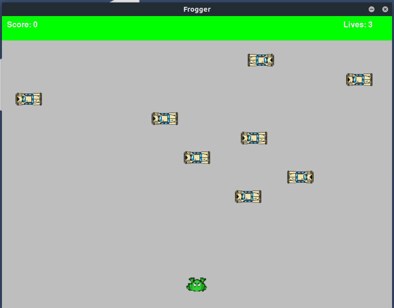

Juego a desarrollar

Frogger es un videojuego arcade clásico desarrollado por Konami y lanzado en 1981. El objetivo principal es ayudar a una rana a cruzar carreteras y ríos llenos de obstáculos para llegar a un lugar seguro.
Objetivo del juego
El objetivo del jugador es guiar a la rana desde la parte inferior de la pantalla hasta las "casillas seguras" en la parte superior, evitando que sea atropellada por vehículos, caiga al agua o sea capturada por enemigos.
Mecánica del juego
- Control de la rana:
- El jugador mueve la rana usando un joystick o las teclas de dirección (dependiendo de la versión del juego).
- La rana puede moverse hacia adelante, atrás, izquierda o derecha, pero no en diagonal.
- Niveles de desafío:
- Cada nivel está dividido en dos secciones principales:
- Carretera: La rana debe esquivar automóviles, camiones y otros vehículos que se mueven horizontalmente a diferentes velocidades y direcciones.
- Río: La rana debe saltar sobre troncos, tortugas y otros objetos flotantes para cruzar el agua sin caer. Algunos troncos se mueven constantemente, y las tortugas pueden sumergirse.
- Cada nivel está dividido en dos secciones principales:
- Casillas seguras:
- En la parte superior de la pantalla hay varias "casillas" que representan los destinos seguros para la rana.
- El jugador debe posicionar a la rana dentro de estas casillas, evitando obstáculos adicionales como cocodrilos.
- Tiempo límite:
- Cada partida tiene un tiempo límite. Si el jugador no logra colocar la rana en una casilla segura dentro de ese tiempo, pierde una vida.
- Pérdida del juego:
- El jugador pierde una vida si:La rana es atropellada por un vehículo.
- La rana cae al agua.
- La rana toca un enemigo (como serpientes o cocodrilos).
- Se acaba el tiempo.
- Puntuación
- El jugador gana puntos al mover la rana hacia adelante.
- Llegar a una casilla segura.
- Atrapar insectos o bonificaciones en el camino.
- Completar todas las casillas del nivel da puntos extra y avanza al siguiente nivel, que es más difícil.